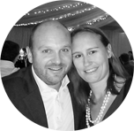

"When In Africa",site-spiration
Although David has been in South Africa for almost three years now, I have experienced some of the "challenges", with him through his being, "foreign" and once more, living in a rural part of KZN! I was inspired by the opportunity to help other couples like ourselves, and other health professionals coming to South Africa in particular, with some basic assistance in administrative issues while living here, and access to the right service providers as well as the fun stuff, places to go, and things to do!
OUR STORY

"OUR BEGINNING"
Dave and I met through a mutual friend, who was in my ladies rowing quad, and who had done a tropical health course with David in his native country of the Netherlands
"INSEPARABLE"
It didn't take the two of us long to know we wanted to be together and despite a period of 18 months involving long commutes Dave would visit me in Durban regularly, coming all the way from the very remote and rural hospital of Rietvlei
MARRIED

"WE DO"
We married in May of 2015 and enjoyed a very happy celebration with our family and friends from all over the world.
"LIFE IN THE VLEI"
I have since moved to Rietvlei hospital where we have a lovely home in the hospital compund, on the hospital premises.